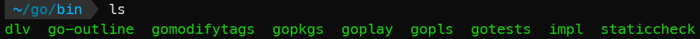

windows10+wsl2+VsCode配置go开发环境
前提条件：
windows10
安装好的wsl2（我的linux版本是ubuntu20.04)
vscode
0x00 在wsl2中安装go
- 去官网下载最新的go文件包，然后解压安装到
/usr/local目录1
$ sudo tar -C /usr/local -xzf go1.16.3.linux-amd64.tar.gz
添加环境变量到~/.profile中（一开始我只添加了第一行的PATH内容，结果后面打开VsCode之后提示安装的go工具失败，所以又加上了goproxy内容。1
2export PATH=$PATH:/usr/local/go/bin
export GOPROXY=https://goproxy.cn- 因为我把wsl中的默认终端改成了zsh，所以需要在
.zshrc中添加上述两行，然后执行source .zshrc。如果是写在.profile中的话，每次打开终端并不会加载其中的内容。
0x01 创建项目文件夹
随便创建一个文件夹，并且在其中创建一个go文件。
0x02 VsCode配置
首先给VsCode安装wsl插件，然后用VsCode打开刚才创建的文件夹，点击打开go文件，然后会跳出安装go插件和相关工具的提示。
正常来说工具安装会出问题，但是在写入了GOPROXY之后就可以解决。虽然我之前在windows上也尝试过了诸多方法来解决这一问题，但是感觉始终没有顺利解决，这次在wsl中竟如此顺利，也不知道是不是系统的原因。

Anyway, 安装好这些工具之后，就可以开始开发了 :-)。